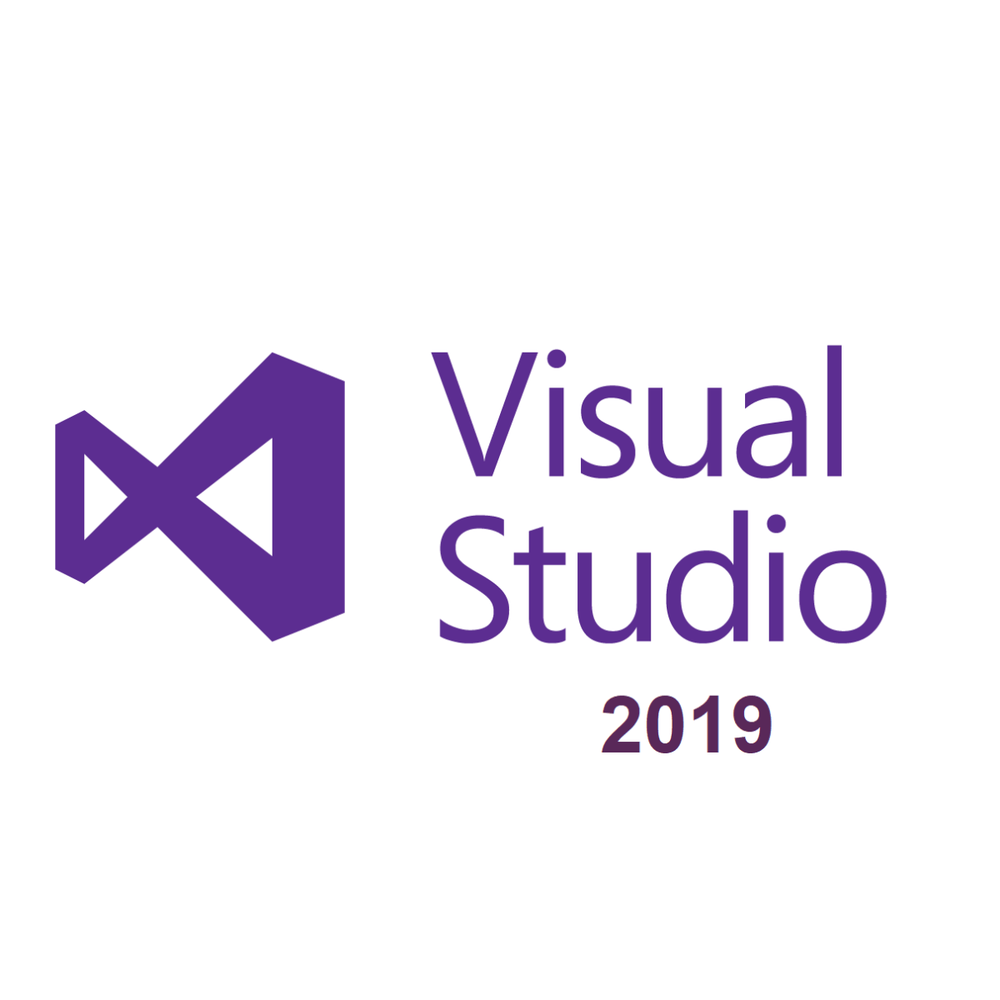

Visual StudioVisual Studio Code is a light-weight yet powerful code editing program used for code compiling, building or debugging the Web applications. It provides the web developers with a new choice of developing tool that combines the simplicity and streamlined experience of a code editor with the best of what developers need for their code editing and debugging. This code editor is a fully featured integrated development environment (IDE) designed for developers working with Microsoft’s open cloud technologies. The application comes with a simple and intuitive interface based on a common explorer style with a panel on the showing all the files and folders you want to access. It facilitates the testing, building, packaging and even the deployment of various types of software. You can create several tasks within Visual Studio Code, save them in the desired project and quickly configure it by establishing the proper arguments. You can also download Microsoft Visual Studio 2017 Team Foundation Server Free Download Features of Visual Studio 2019Below are some noticeable features which you’ll experience after Visual Studio 2019 free download.
Visual Studio 2019 Technical Setup Details
|